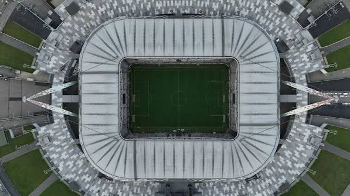
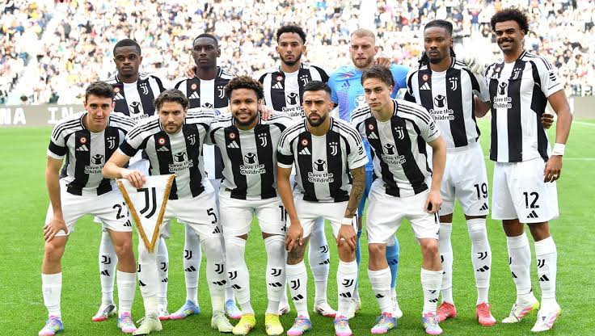

Founded
1897
Italy
Discover the history, stadium, legendary players, major trophies, records, and interesting facts about Juventus Football Club.
Introduction
Juventus is a professional soccer club based in Turin, Italy. Founded in 1897, Juventus has developed into one of the most successful and famous clubs in Italian soccer. The club is known around the world for its black and white striped uniforms, championship history, legendary players, and large fan base.
Juventus plays its home matches at Allianz Stadium in Turin. The stadium opened in 2011 and replaced the Stadio delle Alpi as the club's permanent home. Its design places supporters close to the field and creates a strong atmosphere during Juventus matches.
Juventus is commonly known as "Juve" and "La Vecchia Signora," which means "The Old Lady." Although the club was founded by young students, the Old Lady nickname eventually became one of the most recognizable nicknames in European soccer.
Many legendary players have represented Juventus, including Alessandro Del Piero, Giampiero Boniperti, Michel Platini, Roberto Baggio, Zinedine Zidane, Pavel Nedvěd, Gianluigi Buffon, Giorgio Chiellini, Andrea Pirlo, and Cristiano Ronaldo.

About the Club
Juventus was founded in Turin in 1897 by a group of young students. The club was originally called Sport-Club Juventus. The word "Juventus" comes from Latin and means "youth," reflecting the young age of the people who created the club.
Juventus originally played in pink shirts before adopting its famous black and white stripes in the early 1900s. The new shirts were inspired by the colors of English club Notts County and eventually became one of the most recognizable uniforms in world soccer.
Juventus won its first Italian championship in 1905. The club later became increasingly successful after the Agnelli family became connected with Juventus in the 1920s. This relationship helped the club develop into one of Italy's strongest soccer organizations.
During the 1930s, Juventus won five consecutive Italian league championships. This successful period established the club as a major force in Italian soccer and included several players who also represented the Italian national team.
Juventus continued winning domestic championships throughout later generations. Players such as Giampiero Boniperti, Omar Sívori, Dino Zoff, Gaetano Scirea, and Roberto Bettega became important figures in the club's history.
During the 1980s, French star Michel Platini became one of Juventus' greatest players. Juventus won the European Cup in 1985 and added the trophy to a period that also included domestic and international success. Platini won three consecutive Ballon d'Or awards while representing Juventus.
Another famous generation developed during the 1990s. Juventus won the UEFA Champions League in 1996 after defeating Ajax in a penalty shootout. Players such as Alessandro Del Piero, Gianluca Vialli, Didier Deschamps, and Antonio Conte were important members of that team.
Juventus experienced a major setback in 2006 when the club was relegated to Serie B following the Calciopoli scandal. Several star players left, but others, including Alessandro Del Piero and Gianluigi Buffon, remained with the club. Juventus won Serie B and returned to Serie A after one season.
Juventus began another dominant period in 2011-12, winning Serie A without losing a league match. That championship began a run of nine consecutive Serie A titles from 2012 through 2020. During this period, Juventus also reached Champions League finals in 2015 and 2017.
Cristiano Ronaldo joined Juventus in 2018 and added another global superstar to the club's history. Juventus continued winning domestic trophies during his time in Turin. Across more than a century, Juventus has remained closely connected with championship success and some of soccer's most famous players.

Club Details
1897
Turin, Italy
Allianz Stadium
Black and White
Club Record
Alessandro Del Piero is Juventus' all-time leading goalscorer with 290 official goals. He represented Juventus from 1993 to 2012 and became one of the most important and popular players in the history of the club.
Del Piero helped Juventus win numerous domestic trophies and the 1996 Champions League. He also remained with the club after its relegation to Serie B in 2006 and helped Juventus earn promotion back to Serie A.
Success
Legendary Players
Several Juventus players have won the Ballon d'Or while representing the club. The list includes some of the greatest players in Juventus history.
Michel Platini's three consecutive victories from 1983 through 1985 remain one of the most impressive individual achievements by a Juventus player.
Did You Know?